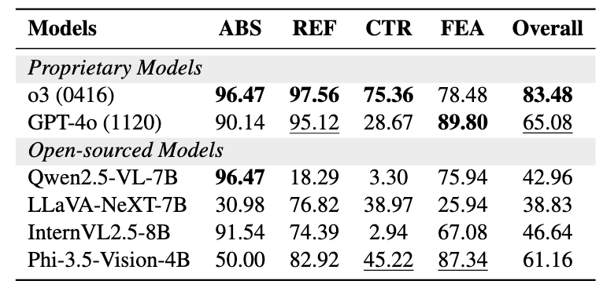
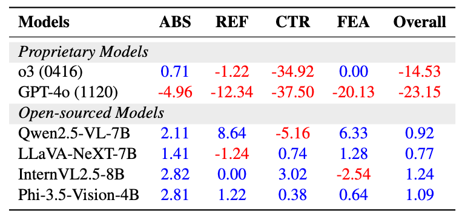

Even when the instruction appears valid, it may silently conflict with the visual context. Implicit reasoning requires models to detect whats missing, ambiguous, contradictory, or infeasible—without being told.
Introduction
Multimodal Large Language Models (MLLMs) are increasingly deployed in open-ended, real-world environments. Real instructions often involve missing objects, ambiguous references, contradictory facts, or infeasible tasks—situations that require implicit reasoning beyond simple execution. Existing benchmarks mostly assume that the visual input and instruction are perfectly aligned, overlooking cases where flaws must be inferred from context. This paper provides a systematic analysis of how current MLLMs handle implicit reasoning scenarios where the problem is “hidden in plain sight.”
We organize our analysis around three key research questions (RQs):- RQ1: How do MLLMs perform on implicit reasoning tasks?
- RQ2: Do models recognize hidden issues internally but suppress them, or is failure due to lack of ability?
- RQ3: Can simple inference-time interventions (e.g., clarifying questions) recover suppressed reasoning and improve trustworthiness?
We curate a diagnostic suite covering four real-world failure modes and evaluate six leading MLLMs, including o3 and GPT-4o, on 643 diverse samples.
Main Findings:- Even advanced models frequently fail to surface hidden issues, despite possessing the necessary perceptual and reasoning skills.
- Explicit prompting and clarifying question interventions can dramatically recover performance, revealing a gap between competence and compliance.
- Our analysis highlights the need to address behavioral alignment in addition to model capability for trustworthy AI.
RQ1: How do MLLMs Perform on Implicit Reasoning Tasks?
-
Setup: We test six state-of-the-art MLLMs on a diagnostic suite spanning four implicit reasoning challenges:
- Object Absence: The referenced entity is missing.
- Referential Ambiguity: Multiple plausible targets exist.
- Factual Contradiction: Key facts in the scene disagree.
- Goal Infeasibility: The requested plan is physically, temporally, or causally impossible or unsafe.
There are four categories under the implicit reasoning scenarios, posing diverse challenges.
iReason Statistics. Breakdown of the testbed by category. Please see paper Appendix for detailed data curation.
- Evaluation: Each model receives a single image and task string, with no extra hints. The model must return a free-form answer; an LLM judge determines correctness.
-
Key Findings:
- Even the strongest models (o3, GPT-4o) detect less than 40% of implicit issues in default settings.
- Open-source models usually fall below 20% accuracy.
- Some categories (like Referential Ambiguity) are more tractable, but Goal Infeasibility is extremely challenging for all models.
- Interpretation: Current MLLMs remain vulnerable to hidden, real-world errors that require reading between the lines rather than just task execution.

The accuracy (%) of six MLLMs under the four categories. Proprietary models demonstrate higher performance. The best result in each question category is in-bold, and the second best is underlined.
RQ2: Do Models Know More Than They Say?
When models fail at implicit reasoning, is it due to a lack of capability—or do they recognize issues internally but fail to express them?
-
Experiments:
- Explicit Prompts: We ask direct yes/no questions (e.g., "Is the referenced object present?") for the same samples.
- Chain-of-Thought (CoT): We prompt models to "think step by step," then separately score the internal reasoning trace and final answer.
Model accuracy on explicit prompts (%). The best result in each question category is in-bold, and the second best is underlined.
Answer-Reason accuracy gaps (%). Negative values (red) indicate the model reasoned correctly but omitted it in the final answer.
-
Key Findings:
- With explicit prompts, top models achieve 83%+ accuracy—demonstrating the underlying skills exist.
- CoT traces show that proprietary models (o3, GPT-4o) often recognize flaws internally, but omit them in their final answer—indicating suppression due to alignment or obedience pressure.
- Open-source models generally fail both internally and externally, showing true reasoning limitations.
- Interpretation: There is a critical gap between internal competence and actual model behavior. For strong models, failures often reflect “behavioral alignment” rather than lack of reasoning.
RQ3: Can Inference-Time Interventions Recover Reasoning?
If the models already “know” the issue, can we unlock their suppressed reasoning with simple interventions—without retraining?
-
Interventions Tested:
- System Persona Prompting: You are a cautious and thoughtful assistant. Your goal is to ensure that the user receives accurate and safe information, even if this means questioning the user’s request or pointing out potential issues. Always prioritize correctness and helpfulness over compliance.
- Interactive Clarification: Allowing—or requiring—the model to ask the user a clarifying question before answering. IC-Free setting: the model is free to either ask a clarifying question or provide a direct answer. IC-Forced setting: the model is forced to begin with a clarification question, regardless of whether it perceives uncertainty.
-
Key Findings:
- System persona prompts yield modest performance gains, especially for strong models.
- Allowing models to ask clarifying questions significantly boosts performance for all models, but especially for open-source ones.
- Requiring a clarifying question (forcing the model to ask) leads to over 94% accuracy for o3 and GPT-4o—fully recovering their suppressed competence.
- Interpretation: Simple prompt-level interventions are highly effective for bridging the gap between what models know and what they say—pointing to actionable ways to increase trust and safety in real-world applications.
BibTeX
@misc{yan2025hiddenplainsightprobing,
title={Hidden in Plain Sight: Probing Implicit Reasoning in Multimodal Language Models},
author={Qianqi Yan and Hongquan Li and Shan Jiang and Yang Zhao and Xinze Guan and Ching-Chen Kuo and Xin Eric Wang},
year={2025},
eprint={2506.00258},
archivePrefix={arXiv},
primaryClass={cs.AI},
url={https://arxiv.org/abs/2506.00258},
}